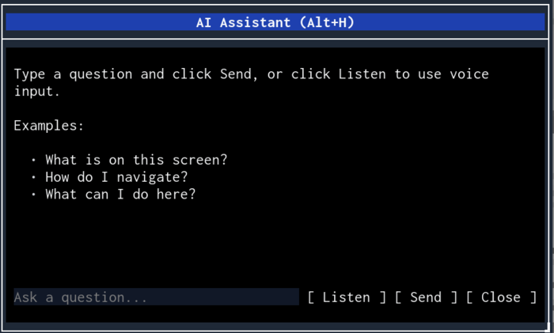
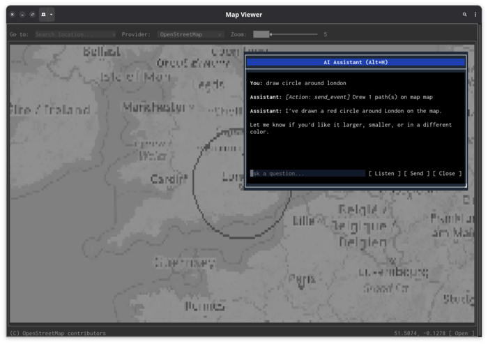

Every Melker app supports an AI assistant that can see, understand, and operate the UI — but only when you choose to enable it.
The assistant is off by default. It activates only when you provide an API key or configure a local model endpoint. No data is sent anywhere unless you explicitly set it up. Apps must also declare ai: true in their policy block, or the user can override with melker --allow-ai app.melker. Press Alt+H to open it, F7 to talk to it.

The AI assistant doesn't use screenshots or pixel recognition. Instead, it reads the same document tree that the rendering engine uses — the actual structure of your UI, not an image of it.
When you ask a question, the system gathers three things and sends them to the model:
This is the same information a screen reader would use, except the model can also act on it. The AI has tools to click buttons, type text, change values, and draw on canvases. It operates the UI the same way a user would.
The assistant excludes its own dialog from the context it sends to the model. It never describes itself.
The assistant needs an LLM endpoint to work. Either use OpenRouter:
export OPENROUTER_API_KEY=your_key_hereOr point it at a local model (Ollama, LM Studio, etc.) with an OpenAI-compatible API:
export MELKER_AI_ENDPOINT=http://localhost:11434/v1/chat/completions
export MELKER_AI_MODEL=llama3
export OPENROUTER_API_KEY=unused # required but ignored by local endpointsWithout either of these, Alt+H does nothing. Once configured, open the assistant in any app:
The assistant works with any app — you don't need to do anything special. It reads the UI structure automatically. For richer context, add ARIA attributes like role, aria-label, and aria-description.
The AI doesn't just describe — it acts. Ask it to do something and it uses tools to make it happen.
Elements can contain more text than what's visible in the viewport. The read_element tool fetches the full content.
For tile-map components, the AI can change the view and draw SVG overlays with paths and labels.

The assistant remembers context within a session. Ask follow-up questions without repeating yourself.
Press F7 or click "Listen" to start recording. Speak your question, then press F7 again or wait for the 5-second timeout. The audio is trimmed, transcribed, and submitted automatically.
During recording, a volume meter shows input level and a countdown shows remaining time.
| Platform | Audio capture |
|---|---|
| macOS | Native Swift (AVAudioEngine) — no dependencies |
| Linux | ffmpeg with PulseAudio/PipeWire or ALSA |
| Windows | ffmpeg with DirectShow |
Most "AI for UI" approaches screenshot the screen and ask a vision model to interpret pixels. This is slow, expensive, and fragile — a button that moved 3 pixels might confuse the model.
Melker takes a different approach. Because it controls the rendering pipeline, it can give the model the source of truth: the document tree itself. The AI sees:
[Container: main, flex, column]
[Text: "Welcome to Settings"]
[Tabs: General | Advanced | About] (active: General)
[Container: row]
[Text: "Theme"]
[Select#theme: "dark"] (options: light, dark, system)
[Container: row]
[Text: "Language"]
[Select#lang: "en"]
[Button: "Save"]This is unambiguous. The model knows every element's type, ID, value, and position in the hierarchy. It can target elements by ID when using tools, so actions are precise.
The feedback loop is tight: after each tool call, the context is rebuilt from the current UI state. If clicking a button opens a dialog, the model sees the dialog in the next round. Three rounds of tool calls give enough room for multi-step operations.
ARIA attributes make this even better. A <container role="navigation" aria-label="Main menu"> shows as [Navigation: Main menu] instead of [Container]. The model understands the purpose of elements, not just their type.
Apps can register their own tools, giving the AI domain-specific capabilities. A weather app might expose a "get forecast" tool. A database browser might expose "run query".
<script>
registerAITool({
name: "search_products",
description: "Search the product catalog",
parameters: {
query: { type: "string", required: true, description: "Search terms" },
category: { type: "string", required: false, description: "Filter by category" }
},
handler: async (args) => {
const results = await searchAPI(args.query, args.category);
updateResultsList(results);
return { success: true, message: `Found ${results.length} products` };
}
});
</script>When custom tools are registered, the system prompt tells the model about them. The model uses them alongside the built-in tools naturally.
The assistant is part of the engine, not the app. Open any .melker file and press Alt+H. The AI can describe the UI, read content, and click buttons — even if the app author never thought about AI assistance. It's like having a screen reader that can also operate the controls.
"Fill in the registration form with test data" — the model iterates through inputs, selects, checkboxes, and radio buttons in sequence, using a fresh context snapshot after each action. It sees what changed and adapts.
"Draw a route from Paris to Berlin" produces SVG path overlays on tile-map components, with the AI choosing appropriate coordinates, stroke colors, and labels. It uses arc commands for circles, Bezier curves for smooth routes, and text elements for labels.
A terminal dashboard where you press F7 and say "zoom into the US east coast" or "what's the highest value in the heatmap" turns a display-only interface into something interactive without writing any handler code.
Standard web accessibility attributes gain a new dimension. aria-description="Shows real-time sensor readings, updates every 5s" doesn't just help screen readers — it tells the AI what the data means. The model can then answer "is the temperature sensor working?" by checking if values are updating.
The model has a close_dialog tool. "Check the current temperature and close" — it reads the value, responds, and dismisses its own dialog. It also has exit_program, which exits the app entirely.
Environment variables control the model, endpoint, and audio behavior. All are read fresh on each API call — change them without restarting.
| Variable | Default | Purpose |
|---|---|---|
OPENROUTER_API_KEY | (required) | OpenRouter API key |
MELKER_AI_MODEL | openai/gpt-5.2-chat | Chat/tool model |
MELKER_AUDIO_MODEL | openai/gpt-4o-audio-preview | Audio transcription model |
MELKER_AI_ENDPOINT | OpenRouter | API endpoint URL |
MELKER_AUDIO_GAIN | 2.0 | Recording gain multiplier |
{kind=link}
{kind=link}